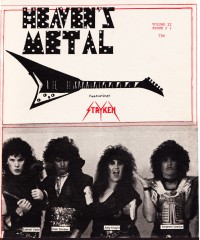

Stryken
|  July 1986 Heaven's Metal |
 October 2006 Heaven's Metal |
Media coverage:
- Jul 1986 in Heaven's Metal "Stryken", by Doug Van Pelt
- 1986 in Heaven's Metal "News Item: Stryken"
- 1987 in Heaven's Metal "Metal Tracks: Stryken"
- Mar 1987 in CCM "Notebook: Stryken Out", by Robyn Frazer
- 1987 in Heaven's Metal "Metal Tracks: Stryken"
- 1987 in Heaven's Metal "Quotable Quotes"
- 1987 in Heaven's Metal "Metal Tracks: Stryken"
- Jan 1988 in CCM "Heavy Metal Thunder", by David S. Hart
- Jul 1988 in Adonai Metal Rock "La Vengeance m'appartient dit le Seigneur"
- Oct 2006 in Heaven's Metal "A Riot", by Doug Van Pelt
- Aug 2019 in Metalbreed "Hard Rock Forever: Stryken", by Anthony Martínez
Albums & reviews:
Books about Stryken
- "2867 Stryken" in Headbangers: The Worldwide Mega-Book of Heavy Metal (Mark Hale, 1993).
- "Stryken" in The Encyclopedia of Contemporary Christian Music (Mark Allan Powell, 2002).
© 2011 CMnexus. Last updated May 2025. Contact: editor -AT- cmnexus -DØT- org